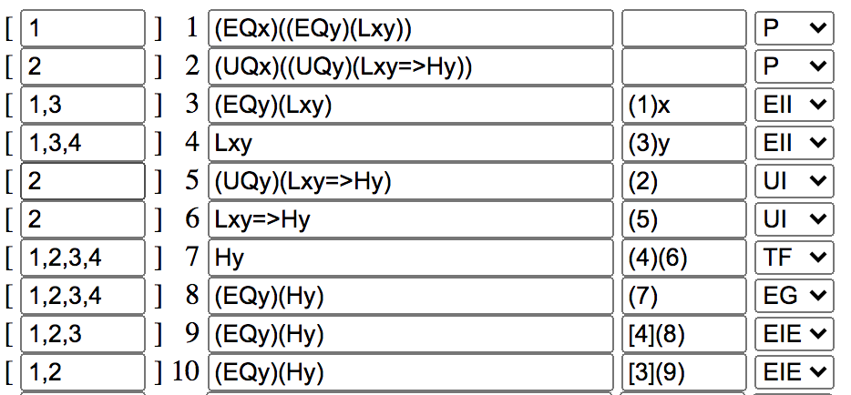
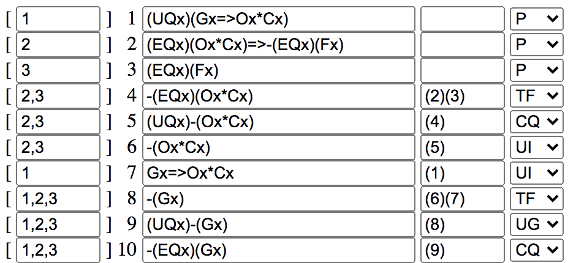
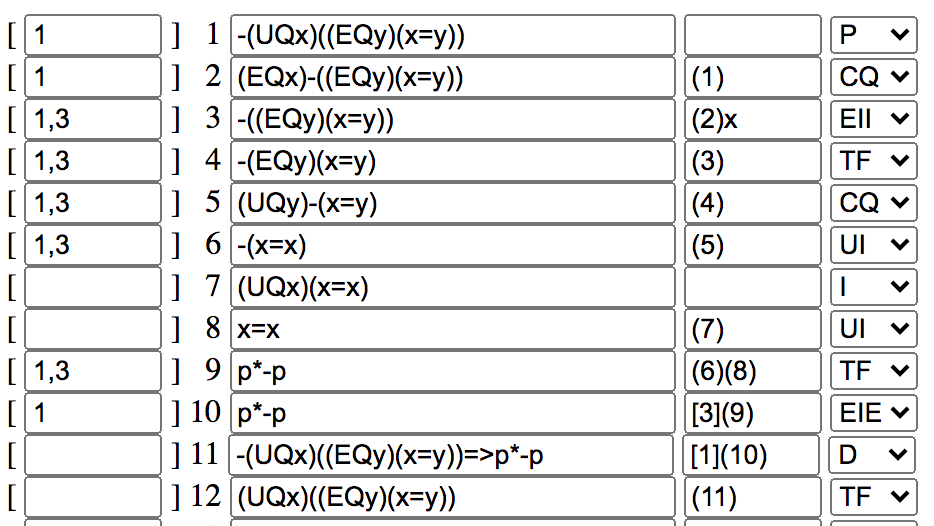

* All quantified statements should be placed in parentheses, for example: "(UQx)(x=x)", though you can leave a negation outside of parentheses, for example: "(EQx)-(x=y)".
* To say "x is not equal to y," use "-(x=y)".
* Keep your parentheses as consistent from line to line, such as when doing CQ. If you need to get rid of a set of parentheses, use TF.
* Avoid using the letters 'E', 'U' and 'Q' outside of "EQ" and "UQ".
* If you get an error, try going through and checking each time you add a line. This can help you narrow down where your issue is.


